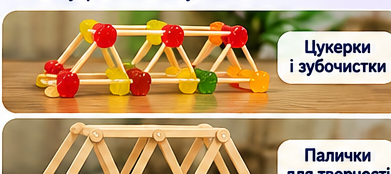
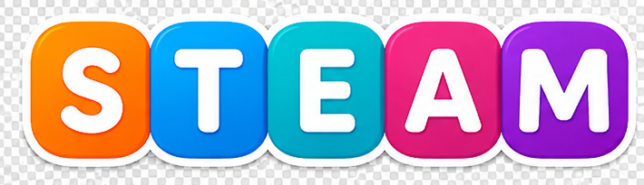
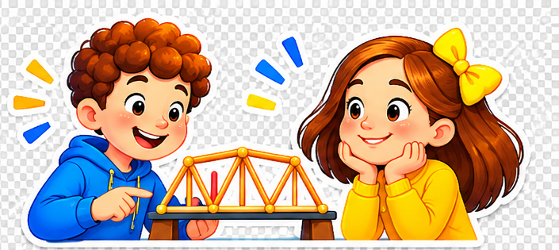
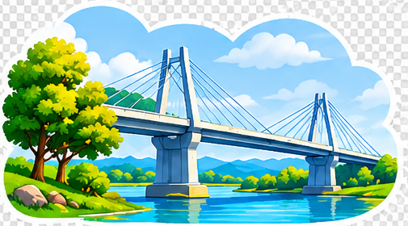
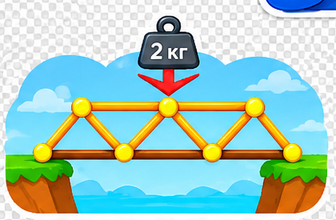
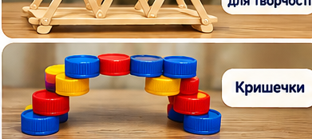
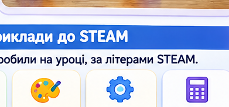

🍬 Желейні цукерки й зубочистки

З'єднайте зубочистки цукерками, щоб утворилися трикутники. Побудуйте каркас між двома опорами.
Гострі кінчики зубочисток: працюйте лише з дорослими. Не їжте використані цукерки.

Досліджуйте, будуйте та перевіряйте свої ідеї!
Онлайн і власноруч
Уявіть, що через струмок потрібно побудувати міст. Ним мають безпечно переходити люди. Але матеріалів небагато. Яку форму мосту обрати, щоб він був міцним?
Подивіться на три ідеї: прямий настил, міст із трикутниками та міст з аркою. Чим вони відрізняються?

Гіпотеза — це припущення, яке можна перевірити дослідом.
Оберіть форму й поступово збільшуйте навантаження. Порівнюйте, коли модель перестане витримувати вагу.

Спробуйте всі три форми. Чи збігся результат із Вашою гіпотезою?
Складіть власний міст. Додавайте елементи каркаса та спостерігайте, як змінюється модель. Трикутник часто допомагає каркасу зберігати форму.
Це візуальний конструктор ідей: він не обчислює реальну міцність. Перевіряйте припущення в досліді.
Оберіть один варіант із матеріалів, які є вдома. Спробуйте зробити проліт між двома опорами та перевірте його легкими предметами.

З'єднайте зубочистки цукерками, щоб утворилися трикутники. Побудуйте каркас між двома опорами.
Гострі кінчики зубочисток: працюйте лише з дорослими. Не їжте використані цукерки.

Зробіть два бічні каркаси з трикутниками. З'єднайте їх поперечними елементами. Для кріплення використайте скотч.
Без гарячого клею та різальних інструментів.

Поставте кришечки як опори. Покладіть між ними смужку картону. Спробуйте скласти картон гармошкою і порівняйте результат.
Це простий спосіб дослідити, як форма змінює жорсткість.
Поверніться до своєї гіпотези. Що показав дослід? Чи допомогли трикутники, арка або складений картон?
Звіт завантажиться як текстовий файл. Фото власного мосту можна додати до роботи окремо.
У цьому уроці ми поєднали п'ять напрямів. Запам'ятайте п'ять англійських слів!
Перетягніть дію до літери. На смартфоні: торкніться дії, а потім потрібної літери. Одна літера — одна дія.